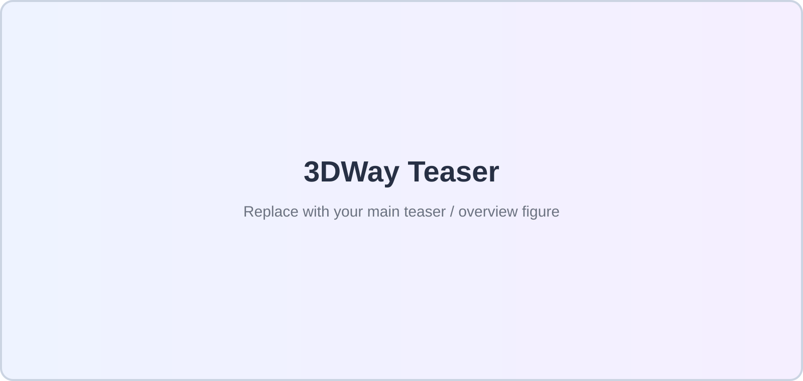
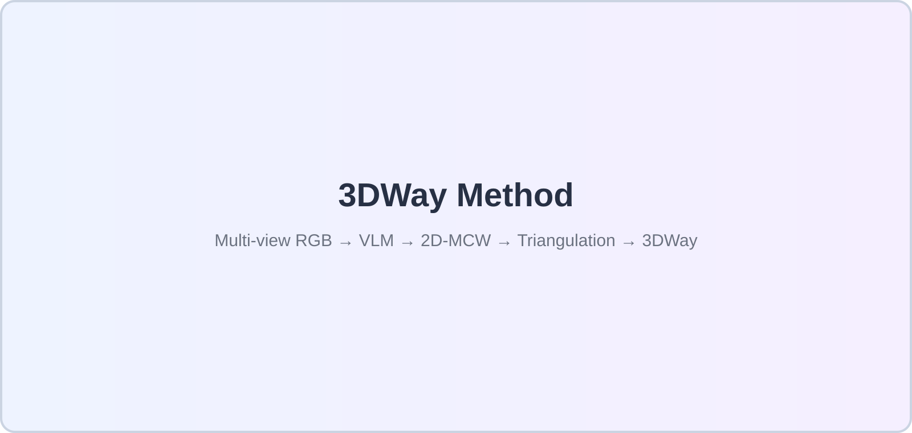
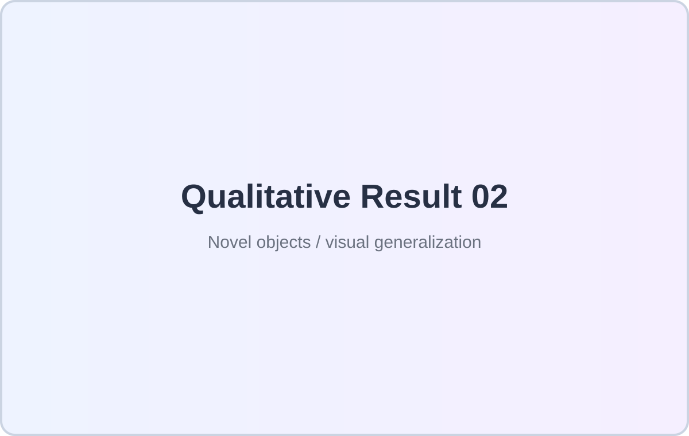
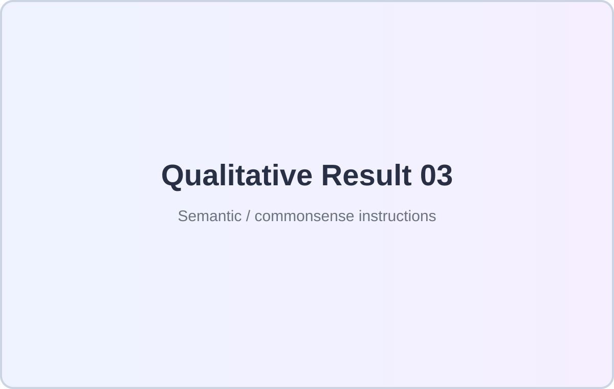

01
Multi-view 2D Waypoint Prediction
Given multi-view RGB observations and a language instruction, a fine-tuned VLM predicts corresponding 2D waypoint sequences in text form.

A fundamental modality gap between vision-language models (VLMs) and robot actions limits the transfer of pretrained vision-language capabilities to manipulation. Trajectory-based intermediate representations offer a promising bridge, but 2D trajectories lack explicit 3D grounding, while depth-lifted trajectories are sensitive to depth noise and free-space ambiguity.
We introduce 3D Consistent Waypoints (3DWay), an efficient, explicit, and actionable 3D trajectory representation. Instead of directly regressing 3D coordinates with a VLM, 3DWay predicts multi-view consistent 2D waypoints and reconstructs them via geometric triangulation. The resulting 3D trajectories can be directly executed for simple tasks or used as explicit geometric priors for foundation VLAs.
Actionable 3D task trajectories without depth sensing.
Multi-view consistent 2D prediction followed by geometric reconstruction.
Direct execution or foundation-VLA integration for improved generalization.
Let the VLM reason in image space; let geometry recover the 3D structure.

Given multi-view RGB observations and a language instruction, a fine-tuned VLM predicts corresponding 2D waypoint sequences in text form.
With known camera parameters, corresponding 2D waypoints are triangulated into explicit 3D points, forming the complete 3DWay trajectory.
3DWay supports direct waypoint execution or Adaptive Waypoint-Guided Fine-tuning for foundation VLAs.
Direct execution of 3DWay demonstrates strong generalization and effective transfer of pretrained VLM capabilities.
3DWay-augmented fine-tuning substantially boosts few-shot VLA performance with only 10 demonstrations per task.
3DWay integration substantially improves average success on real-world basic tasks.


Replace these placeholders with short autoplaying muted MP4 clips or YouTube embeds.
@inproceedings{3dway2026,
title = {3DWay: Generalizing Robot Manipulation via 3D Consistent Waypoints},
author = {TODO: Add Authors},
booktitle = {European Conference on Computer Vision (ECCV)},
year = {2026}
}